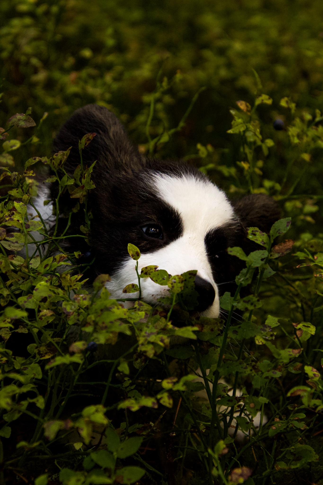

Din hund förtjänar ett lyckligt liv fyllt av kärlek och bus tillsammans med husse eller matte - fullt med mat,leksakeroch kläder efter väder.

Hundkläder
Hundkläder är så mycket mer än bara söta utstyrslar. Ett klädesplagg kan till exempel göra stor skillnad för hunden under uppvärmning och nervarvning vid ett fysiskt träningspass. I regn och kyligare väder blir hunden nerkyld snabbt efter en springtur eller jaktrunda. Att slänga på ett värmetäcke direkt när hunden stannar upp hjälper musklerna att svalna i lagom takt så att hunden slipper bli stel och öm. Kalla muskler och leder löper också större risk för sträckningar och skador vid exempelvis vinterlek.
Vi har valt ut bra hundfoder och hundmat till låga priser från marknadens bästa fodermärken. Vi har hundfoder i form av torrfoder och våtfoder utvecklat för olika livsstadier, aktivitetsnivåer och hundraser. Här finns blöt hundmat, fryst färskfoder, BARF för hunden och hundvalpen, torrfoderkulor och mjölkersättning samt veterinärfoder och dietfoder. Att hitta rätt sorts hundfoder för hundar är inte alltid lätt.
Aktivitetsspel och leksaker för hundar. Aktivitetsleksaker, hundspel, bollar och hundaktivering med hög kvalitet för hundar och hundvalpar finns i butiken, online på nätet och i veterinärkliniken.
Pinnar är våra mest sålda leksak, alla åldrar samt raser älskar den!
Inköps tips för nyblivna hundägare
Halsband/sele och koppel
Mat- och vattenskål
Våtfoder och torrfoder framtaget för valpar, t.ex. Doggy valp torrfoder, Doggy Professional valp torrfoder eller Doggy Professional valp våtfoder
Hundbädd eller korg
Hundbajspåsar
En leksak eller två, gärna något litet mjukisdjur
Något att gnaga på för kliande tänder
Fästingborttagare
Tandborste och hundtandkräm, vänj valpen tidigt!
Hundschampo
Kloklippare
Blodstoppande vadd, om det skulle gå illa när du till exempel klipper klorna